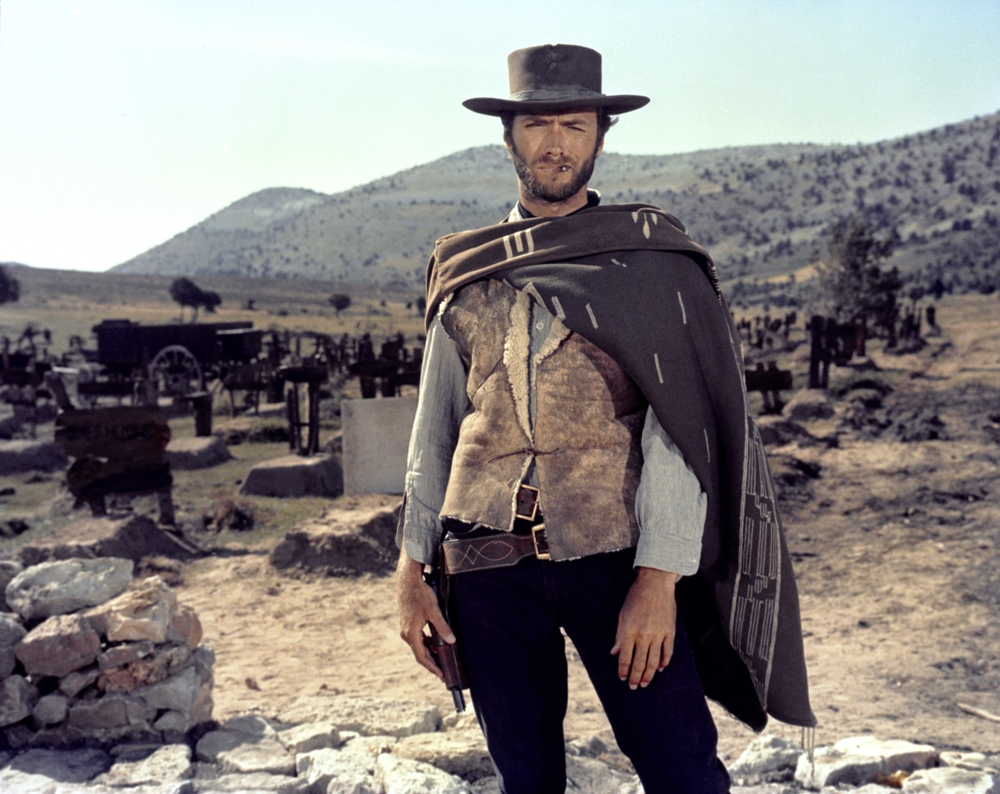

What are Spaghetti Westerns?
The spaghetti Western is a broad subgenre of Western films produced in Europe. It emerged in the mid-1960s in the wake of Sergio Leone's filmmaking style and international box-office success. The term was used by foreign critics because most of these Westerns were produced and directed by Italians.
The majority of the films in the spaghetti Western genre were international co-productions by Italy and Spain, and sometimes France, West Germany, Britain, Portugal, Greece, Yugoslavia, and the United States. Over six hundred European Westerns were made between 1960 and 1978. Most spaghetti Westerns filmed between 1964 and 1978 were made on low budgets, and shot at Cinecittà Studios and various locations around southern Italy and Spain.
Leone's films and other core spaghetti Westerns are often described as having eschewed, criticized or even "demythologized" many of the conventions of traditional U.S. Westerns. This was partly intentional, and partly the context of a different cultural background. In 1968, the wave of spaghetti Westerns reached its crest, comprising one-third of the Italian film production, only to collapse to one-tenth in 1969. Spaghetti Westerns have left their mark on popular culture, strongly influencing numerous works produced in and outside of Italy.